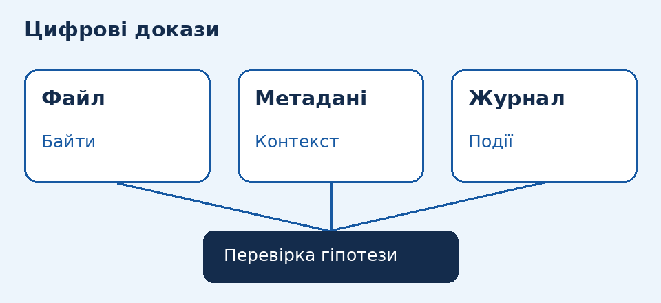

Хто залишив цифровий слід?
Чи можна відновити подію за файлами, часом і контрольними сумами?
Наукова схема

У навчальній лабораторії змінився звіт. Є дві копії та журнали. Не поспішайте звинувачувати людину: обліковий запис, пристрій і особа — не одне й те саме.
Коротка теорія
SHA-256 перетворює довільні байти на 256-бітний дайджест. Однаковий дайджест є сильним свідченням однаковості байтів, але не доводить авторство. Метадані можна змінити. Журнали залежать від синхронізації годинників і повноти запису. Цифрова криміналістика потребує збереження оригіналів, документування дій та зіставлення незалежних доказів.
01. Один символ — інший відбиток
Контрольний SHA-256 початкового звіту:
6396a473550dc49170fd62f6486e3bc1b87238e9c5dede87046803e2f712dcb5
Змініть один символ, потім додайте пробіл. Порівняйте кількість змінених бітів. Чи можна з хешу визначити, що саме змінилося?
| Спроба | Змінено бітів із 256 | Збіг |
|---|
02. Годинники не погоджуються
Усі записи наведено в UTC. Годинник ноутбука випереджає еталон на невідому кількість секунд. Одна й та сама контрольна подія зафіксована сервером о 12:00:00, ноутбуком о 12:01:30. Визначте поправку, яку потрібно відняти.
| Подія | Джерело | Записаний час | Скоригований час |
|---|
03. Відокремте факти від припущень
Синтетичний журнал: усі записи сервера в UTC.
| Час | Подія |
|---|---|
| 12:02:00 | Вхід у запис lab07 |
| 12:03:10 | lab07: запис report.txt |
| 12:03:12 | Автоматична синхронізація report.txt |
| 12:04:00 | Контрольна сума не збігається з еталоном |
Оберіть твердження, які підтримують записи, за умови достовірності журналу.
04. Наука навколо Вас: файл під лупою
Виберіть власний нешкідливий файл або створіть тестову копію. Файл читається локально, не надсилається на сервер. Не використовуйте чужі дані. Порівняйте хеш оригіналу та перейменованої копії, потім змініть вміст копії й повторіть. У властивостях фото на своєму пристрої перевірте, чи є дата зйомки та координати; не записуйте самі координати.
| Розмір, байт | SHA-256 |
|---|
05. Експертний висновок
Відновіть хронологію та поясніть, що доводить кожен доказ і чого він не доводить. Запропонуйте спосіб збереження оригіналів і перевірки журналів.
Наукова цікавинка
Зміна імені файлу не змінює його байтів, тому SHA-256 вмісту залишається тим самим. Цифровий підпис, на відміну від звичайного хешу, може підтверджувати зв’язок даних із ключем підписувача за належної перевірки довіри.
Ваше майбутнє у ФТІ
Цифрова криміналістика, аналіз інцидентів, криптографічний захист та інженерія безпеки.
ФТІ КПІ · ФТІ школа